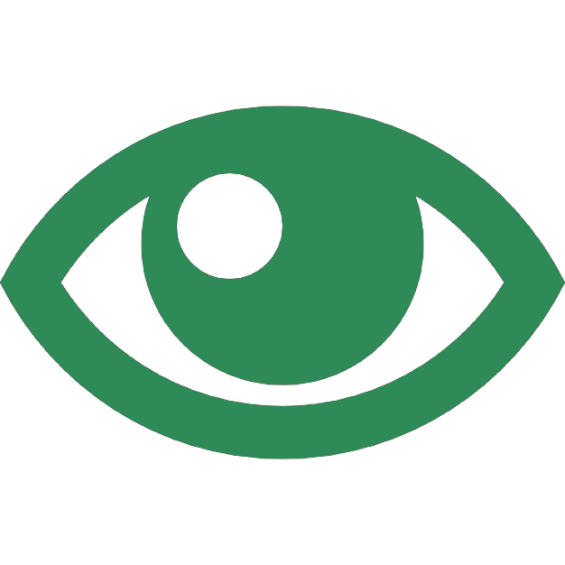

Алгоритмическая конструкция с предусловием
Алгоритм — понятная и конечная последовательность точных действий (команд), формальное выполнение
которых позволяет получить решение поставленной задачи. Команда в алгоритме — указание на
выполнение конкретного действия.
Человеку также регулярно приходится выполнять действия исходя из тех или иных условий: взыять сонт,
если пошёл дождь, пойти в магазин, если акончились продукты и др. В качестве примера
Алгоритм покупки продуктов:

2. Есть ли в карзине место?
а) Найти нужный товар
б) Положить его в карзину
3. Пойти на кассу оплачивать карзину
Алгоритмическая конструкция цикл с предусловием (цикл «пока») — способ организации цикла, при котором количество
выполнений команд тела цикла зависит от истинности или ложности условия цикла.
Алгоритмическая конструкция цикла с параметром может изображаться на блок-схеме следующим образом:
В качестве условий могут использоваться команды связанные с наличием или отстутсвием стен на поле среды Робот,
или с наличием или отсутствием закрашеной облости. Данные команды представлены на таблице:

При создании алгоритма рекомендуется следовать определённой последовательности:
1) Словесное решение задачи;
2) Построение блок-схемы решения задачи;
3) Написание псевдо-кода программы;
4) Запись алгоритма на языке программирования.
Алгоритм с предусловием часто необходим для программ в которых условия могут меняться в зависимости от условий среды.
Это сделано для того, чтобы не переписывать код по несколько раз для каждого условия, а создания универсальной программы.
Рассмотрим построение цикла с предусловием на примере решения задачи коспьютерного исполнителя Робот.
При запуски программы рабочая область слегка изменяеться, однако код решения программы остаёться тот же.
| Псевдо-код | Блок-схема | Программа |
|
► НАЧАЛО ► Подключить модуль robot ► Пока снизу свободно: ► Идти на 1 шаг направо ► КОНЕЦ |

|
from robot import *
|
| Варианты Запущеной программы | Вариант 1 | Вариант 2 | Вариант 3 |
| Решение программы |  |
 |
 |
Для решения любой задачи в программировании необходимо сначало составить его по действиям, после при необходимости составить словесную или визуальную схему и записать саму программу. Данные действия обязательны для начинающих программистов, в дальнейшем вы сможите решать задачи путём записи его на языке программирования, без использования других представлений.
Упражнения

Проанализируете задание, код-решение и изображение-решение. Найдите
отличие между изображением, кодом и условием и ответьте на вопросы
«да» или «нет»:
1. Соответствует ли код программы условию задания?
2. Соответствует ли рисунок условию задания?
3. Соответствует ли рисунок коду программы?

Проанализируете задание и изображение-решение. Найдите отличие между изображением и условием. Соответствует ли рисунок условию задания? («да» или «нет»).

Составьте условие к программе с представленным кодом решением для и изображением фигуры.

Будет позже
Будет позже
Составьте программу для построения изображения треугольника, соответствующего условию:
«Изобразите фигуру на холсте размером 4×6 по точкам (1;1), (1;5), (3;5), (3;1), (1;1)»

Составьте программу для построения изображения треугольника, соответствующего условию:
«Изобразите треугольник на холсте размером 10×5 по точкам (1;1), (6;4), (9;1); (1;1)»
Будет позже
Будет позже
Составьте программу для построения изображения